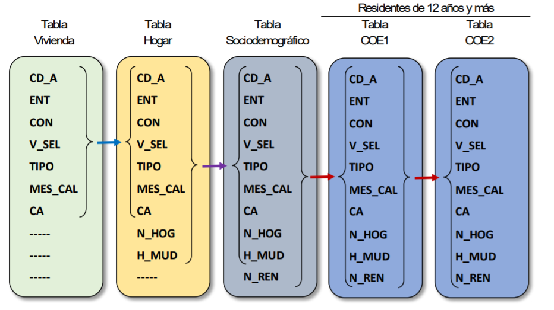
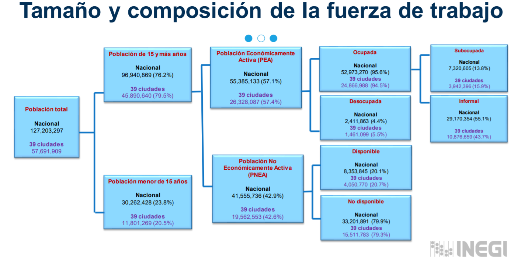

Clase 8. Métodos experimentales en R
Inferencia Causal
Irvin Rojas
rojasirvin.com
Centro de Investigación y Docencia Económicas División de Economía
Agenda
Breve recordatorio de estructura de bases
Estadística descriptiva y pruebas de hipótesis
Cumplimiento imperfecto
Encontrarán los archivos necesarios para realizar este laboratorio en el grupo de Teams
Estructura de bases usando la ENOE
Usemos los datos de la ENOE 1T2021
- Usaremos datos de la ENOE para mostrar algunas ideas respecto a la estructura de los datos
- Cuando hablamos de datos, a las filas las llamamos observaciones y a las columnas variables
- Por ejemplo, la base de datos de empleo, data_empleo1 tiene 402,536 observaciones, es decir, registros de 282,161 entrevistas
- La misma base tiene 190 variables
Usemos los datos de la ENOE 1T2021
Estos son los datos oficiales que usa INEGI para los cálculos de sus indicadores laborales
Recomiendo ver la documentación de INEGI para entender la estructura de la base de datos
La ENOE es una encuesta trimestral que caracteriza al mercado laboral mexicano y las 39 ciudades más importantes del país
- La ENOE está contenida en cinco archivos, los cuales se relacionan entre sí de acuerdo al siguiente diagrama

Pegado de bases
Recomiendo que primero identifiquen qué variables necesitan para así pegar las bases necesarias (pegar todas las bases y crear una sola gran base es ineficiente en términos de cómputo)
En este ejemplo, usaremos la base con características sociodemográficas y la primer parte del cuestionario de empleo
#A socdem le pegamos empleo1
data_enoe <- data_socdem %>%
left_join(data_empleo1,
by=c("cd_a", "ent", "con", "v_sel", "tipo", "mes_cal", "ca","n_hog", "h_mud", "n_ren"))
#Pequeño arreglo para eliminar las variables con .x y .y
data_enoe <- data_enoe %>%
rename_at(vars(ends_with(".x")),
~str_replace(., "\\..$","")) %>%
select_at(vars(-ends_with(".y")))Calculamos el tamaño de la PEA y la PNEA
La variable de clasificación de la PEA y PNEA es clase1
Eliminamos las observaciones de los individuos que no son residentes permanentes y los cuestionarios que no fueron completados
Restringimos a los individuos de 15 años en adelante
La variable fac_tri es el factor de expansión que nos permite hacer inferencia para la población de México de forma trimestral
Calculamos el tamaño de la PEA y la PNEA
Fuente: INEGI
Regresión básica
##Regresión básica
data_enoe <- data_enoe %>%
mutate(lingreso=ifelse(ingocup>0,log(ingocup),NA))
m1<-lm(lingreso ~ anios_esc, data=data_enoe)
summary(m1)$coef Estimate Std. Error t value Pr(>|t|)
(Intercept) 8.18922050 0.0050731658 1614.2229 0
anios_esc 0.04338408 0.0004248752 102.1102 0##Agregamos indicadora de mujer
m2<-lm(lingreso ~ anios_esc+factor(sex), data=data_enoe)
summary(m2)$coef Estimate Std. Error t value Pr(>|t|)
(Intercept) 8.29583852 0.0051903541 1598.31841 0
anios_esc 0.04543314 0.0004165385 109.07310 0
factor(sex)2 -0.31748027 0.0045407406 -69.91817 0Regresión ingenua
##¿Ser beneficiario del sistema de salud causa mayor ingreso?
data_enoe<-data_enoe %>%
mutate(beneficiario=ifelse(imssissste==1 |imssissste==2,1,0))
m3<-lm(lingreso ~ anios_esc+factor(sex)+factor(beneficiario), data=data_enoe)
summary(m3)$coef Estimate Std. Error t value Pr(>|t|)
(Intercept) 8.20483133 0.0049345578 1662.72880 0
anios_esc 0.03288278 0.0004051091 81.17020 0
factor(sex)2 -0.31677913 0.0042652794 -74.26926 0
factor(beneficiario)1 0.52213323 0.0043677066 119.54403 0Pruebas de balance usando regresión
Datos de Angrist
Noten que aquí solo analizaremos UN tratamiento
Los números que generemos no serán iguales a los reportados en el artículo
data.angrist<-read_csv("./STAR_public_use.csv",
locale = locale(encoding = "latin1")) %>%
clean_names()
#Usemos por ahora un solo tratamiento, SSP
data.angrist.table1<-data.angrist %>%
select(noshow,age,female, mtongue, gpa0, ssp) %>%
mutate(mtongue=ifelse(mtongue=="English",1,0)) %>%
mutate(ssp=factor(ssp,levels=c(0,1),
labels=c("Control","SSP")))Estadística descriptiva
Diferencias de medias
- Con prueba t
Welch Two Sample t-test
data: age by ssp
t = 1.1722, df = 325.42, p-value = 0.242
alternative hypothesis: true difference in means between group Control and group SSP is not equal to 0
95 percent confidence interval:
-0.03415216 0.13485679
sample estimates:
mean in group Control mean in group SSP
18.28764 18.23729 Diferencias de medias
- Con una regresión
¿Los observables predicen el tratamiento?
predict_t <- lm(as.numeric(ssp) ~ age + female + mtongue + gpa0,
data=filter(data.angrist.table1,noshow==0) )
summary(predict_t)$coef Estimate Std. Error t value Pr(>|t|)
(Intercept) 1.4025655392 0.338476098 4.1437654 3.599109e-05
age -0.0168268559 0.014943752 -1.1260128 2.603326e-01
female -0.0073619093 0.018341162 -0.4013873 6.881898e-01
mtongue 0.0038570717 0.019969401 0.1931491 8.468673e-01
gpa0 0.0007211719 0.002149339 0.3355319 7.372688e-01Un paréntesis: modelsummary
Un paréntesis
El paquete modelsummary puede serles útil para construir tablas
Para hacer estadística descriptiva:
Un paréntesis
- Para hacer tablas de balance:
| Control (N=1406) | SSP (N=250) | |||||
|---|---|---|---|---|---|---|
| Mean | Std. Dev. | Mean | Std. Dev. | Diff. in Means | Std. Error | |
| Fuente: Angrist, Lang & Oreopoulos (2009) | ||||||
| noshow | 0.05 | 0.22 | 0.06 | 0.23 | 0.01 | 0.02 |
| age | 18.29 | 0.62 | 18.28 | 0.66 | -0.01 | 0.04 |
| female | 0.57 | 0.49 | 0.57 | 0.50 | -0.01 | 0.03 |
| mtongue | 0.71 | 0.46 | 0.72 | 0.45 | 0.01 | 0.03 |
| gpa0 | 78.68 | 4.23 | 78.85 | 4.40 | 0.17 | 0.30 |
Cumplimiento imperfecto
Estimador de variables instrumentales
- Consideremos el modelo \(y=\beta_0+\beta_1 x_1+\beta_2 x_2+\ldots+\beta_k x_K+u\) donde \(x_k\) está correlacionado con \(u\)
- Y consideremos la proyección lineal de \(x_K\) en las variables exógenas: \[x_K=\delta_0+\delta_1 x_1+\delta_2 x_2+\ldots+\delta_{K-1}x_{K-1}+\theta_1 z_1+e_K\]
donde \(E(e_K)=0\) y \(x_K\) no está correlacionado con las \(x_j\) ni con \(z_1\)
- Supongamos que tenemos una variable instrumental \(z_1\) tal que:
- Exclusión: \(z_1\) no pertenece a la ecuación de \(y\), es decir, \(Cov(z_1,u)\)
- Relevancia: \(\theta_1\neq 0\) entonces \(z_1\) es una variable instrumental para \(x_k\)
Estimador de variables instrumentales
- Escribamos el modelo como \(y=x\beta+u\), donde \(x=(1,x_2,\dots,x_K)\) y definamos \(z=(1,x_2,\ldots,x_{K-1},z_1)\)
- Premultiplicamos la ecuación de \(y\) por \(z'\) y tomamos el valor esperado: \[E(z'y)=E(z'x)\beta+E(z'u)\]
- Por la condición de exclusión sabemos que \(E(z'u)=0\), por tanto, si \(E(z'x)\) es de rango completo: \[\beta=E(z'x)^{-1}E(z'y)\]
- Y sustituyendo los análogos muestrales:
\[\hat{\beta}_{VI}=\left(\frac{1}{N}\sum_iz_i'x_i\right)^{-1}\left(\frac{1}{N}\sum_iz_i'y_i\right)=(Z'X)^{-1}Z'Y\]
Variables instrumentales y mínimos cuadrados en dos etapas
En nuestro problema del LATE, el instrumento será la asignación al tratamiento
- Si \(Z\) es asignado de manera aleatoria, se cumple la restricción de exclusión
La variable endógena es la adopción, por lo que la variable de asignación funciona como un instrumento de la adopción
- En la práctica, puede haber más de un instrumento y más de una variable endógena y el método de estimación usado es mínimimos cuadrados en dos etapas
- Reservaremos el término estimador de variables instrumentales al caso en que tenemos tantas variables endógenas como instrumentos, es decir, cuando el modelo esta exactamente identificado
- En este curso solo usaremos modelos exactamente identificados
Propiedades del estimador de VI
No vamos a ocuparnos de las pruebas formales
Noten que el estimador de nuevo puede escribirse como funciones de medias muestrales, por tanto, recurrimos a LGN y TLC para probar su consistencia y distribución asintótica
Una nota sobre instrumentos débiles
Hay cosas que no abordaremos en el curso, como el hecho de que, a diferencia del estimador de MCO, el estimador de VI es sesgado
Es decir, en muestras grandes, el estimador de VI solo se acerca al parámetro poblacional
- Más aún, se puede mostrar que: \[sesgo_{VI}=sesgo_{MCO}\frac{1}{F+1}\] donde \(F\) es el estadístico \(F\) en una prueba de significancia conjunta de los regresores de la primera etapa
- Es decir, el sesgo se aproxima al sesgo del estimador de MCO cuando no hay primera etapa
- En la práctica, nos fijamos que la primera etapa sea válida al observar los coeficientes estimados sobre \(Z_i\)
- Y la regla de dedo usada en econometría es que \(F>10\) en la primera etapa
Cumplimiento imperfecto
Crépon, Devoto, Duflo & Parienté (2015), Estimating the Impact of Microcredit on Those Who Take It Up
Experimento en Marruecos
- Pareciera que las intervenciones de microfinanzas no tienen efectos en el hogar promedio
- Los autores estudian con detalle el efecto de la adopción
- En 81 de 162 localidades se introdujo aleatoriamente una empresa de microfinanzas
- Para seleccionar las localidades de tratamiento, primer se emparejaron localidades de acuerdo a características observables y, para cada pareja se asignó a tratamiento y otra a control
- Tenemos entonces dos indicadores
- treatment es la variable de asignación aleatoria
- client es la variable de adopción
Cumplimiento imperfecto
- Veamos la estadística descriptiva básica de la variable de tamaño del hogar:
Prueba de balance con regresión
#Con una regresión:
dif_members <- lm(members_resid_bl ~ treatment + factor(paire), data=data.morocco)
summary(dif_members)$coef[1:7,] Estimate Std. Error t value Pr(>|t|)
(Intercept) 4.06166091 0.3047365 13.3284357 9.311212e-40
treatment 0.04334484 0.0707258 0.6128576 5.400023e-01
factor(paire)2 1.78431373 0.4152704 4.2967514 1.770771e-05
factor(paire)3 1.06107184 0.4356350 2.4356902 1.490300e-02
factor(paire)4 -3.08333333 0.4594672 -6.7106719 2.184193e-11
factor(paire)5 1.85814080 0.4442115 4.1830089 2.933028e-05
factor(paire)6 2.88352450 0.4262934 6.7641779 1.517259e-11Errores estándar agrupados
#Usemos errores estándar agrupados
#Esto es lo más cercano que he llegado de lo que producen los autores
coef_test(dif_members, vcov = "CR1",
cluster = data.morocco$demi_paire, test = "naive-t")[1:2,]Alternative hypothesis: two-sided
Coef. Estimate SE Null value t-stat d.f. (naive-t) p-val (naive-t)
(Intercept) 4.0617 0.0641 0 63.381 159 <0.001
treatment 0.0433 0.0780 0 0.556 159 0.579
Sig.
***
Hay selección
##Pero hay selección, veamos un tabulado cruzado
data.morocco %>%
mutate(treatment=factor(treatment, levels=c(0,1),labels=c("Control", "Tratamiento"))) %>%
mutate(client=factor(client, levels=c(0,1),labels=c("No cliente", "Cliente"))) %>%
tabyl(treatment, client) treatment No cliente Cliente NA_
Control 2101 0 165
Tratamiento 1753 251 195Ser cliente no es independiente
#¿Ser cliente es independiente del tamaño del hogar?
dif_members_client <- lm(members_resid_bl ~ client + factor(paire), data=data.morocco)
coef_test(dif_members_client, vcov = "CR1",
cluster = data.morocco$demi_paire, test = "naive-t")[1:2,]Alternative hypothesis: two-sided
Coef. Estimate SE Null value t-stat d.f. (naive-t) p-val (naive-t)
(Intercept) 4.18 0.127 0 33.03 159 <0.001
client 0.43 0.179 0 2.41 159 0.0172
Sig.
***
*#¿El número de actividades es independiente de ser cliente?
dif_activities_client <- lm(act_number_bl ~ client + factor(paire), data=data.morocco)
coef_test(dif_activities_client, vcov = "CR1",
cluster = data.morocco$demi_paire, test = "naive-t")[1:2,]Alternative hypothesis: two-sided
Coef. Estimate SE Null value t-stat d.f. (naive-t) p-val (naive-t)
(Intercept) 1.109 0.2307 0 4.81 159 <0.001
client 0.191 0.0681 0 2.81 159 0.0056
Sig.
***
**Próxima sesión
Hablaré sobre cómo estimar el LATE usando variables instrumentales
- Angrist, J. D. (2006). Instrumental variables methods in experimental criminological research: what, why and how. Journal of Experimental Criminology, 2(1), 23-44.
Usaremos R para terminar el análisis con cumplimiento imperfecto
Presentación creada usando el paquete xaringan en R.
El chakra viene de remark.js, knitr, y R Markdown.
Material de clase en versión preliminar.
No reproducir, no distribuir, no citar.